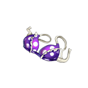
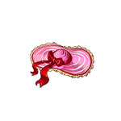
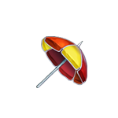
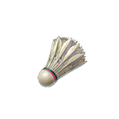

Получено: файл; исходный URL. Иллюстрация в отдельной статье ViveR_9 «Пляжная коллекция»; исходный файл без перекодирования. Авторство отдельно не установлено. Страница: источник.
Пляжная коллекция
ВКонтакте; дата источника не указана- Тип
- Коллекции
- Версия и дата
- ВКонтакте; дата источника не указана
Элементы коллекции




Данные по источнику · ВКонтакте · дата источника не указана
Предварительно: один источник; требует сверки. Требуется сверка.
- Награда
- 500 опыта и 5 000 монет
- Где копать
- Ёлка, ракета, каменные и плюшевые буквы ЮРА
- Состав (источник Zombie-island)
- Бикини; Шляпка; Круг; Зонт; Воланчик.
- Награда (источник Zombie-island)
- 5000 Монеты; 500 Опыт.
- Где копать Пляжную коллекцию в Зомби Ферме лопатами
- Ракета; Марафонец; Флаг Марафонца; Буква Ю; Буква Р; Буква А; Весенняя ваза 3; Весенняя ваза 2; Весенняя ваза 1.
- Пляжная коллекция попадается в ведрах Рыбаков и в мешках Звездочетов
- Рыбак; Рыбак с мозгами; Звездочет; Звездочет за зомбаксы.
- Пляжную коллекцию можно найти в ценностях и сокровищах
- Секретный клад; Сундук Чудовища 3; Ваза; Чаша; Большая бочка; Коллекционер 2; Ракушка розовая; Ракушка оранжевая; Осьминог; Морской ёжик; Морской конёк; Ледяной дворец; Цирковой шатер; Весенний фонтан; Икебана; День защиты детей; Сюрприз.
- Пляжную можно выиграть в рулетке
- Бунгало.


Данные по источнику · браузерная версия; платформа в ответе не уточнена · Дата на странице (формат не уточнён): 18/03/2015
Предварительно: Ответ справочного сайта; достоверность и независимость от других фанатских источников не установлены. Возможны различия редакций и версии.. Требуется сверка.
- Ответ источника
- В игре Зомби ферма Пляжная коллекция копается, как и все остальные - на локациях друзей под декорациями и постройками. Либо же вы можете поискать в секретных кладах и в ведрах зомби-рыбаков. Среди построек следует обратить внимание на буквы А, Ю, Р, Марафонец и флаг Марафонца и на Ракету. Некоторые компоненты пляжной коллекции можно найти в большой бочке, чаше, вазе. Заведите на своей ферме Звездочета, Звездочета за зомбобаксы, Рыбака с мозгами, которые будут собирать и приносить все элементы для коллекции. Не забывайте забирать подарочки из циркового шатера, ледяного дворца, икебаны – среди них может быть именно тот необходимый составляющий пляжной коллекции.
Данные по источнику · браузерная версия; платформа не указана · дата редакции не установлена
Предварительно: Содержимое списка: изображения и колонки могут терять смысл при извлечении текста; отдельная страница и дата не проверены. Подписи alt иногда ошибочны.. Требуется сверка.
- Текст карточки из каталога
- 500 опыта и 5000 монет Бикини Шляпка Круг Зонт Воланчик Где копать: Ёлка, Ракета, каменные буквы "ЮРА", плюшевые буквы "ЮРА", Папоротник, ограды, деревья
Данные по источнику · Мой Мир (Mail.ru); историческая таблица · дата редакции не установлена
Предварительно: Источник сам использует знаки вопроса; не следует считать такие места подтверждёнными. Возможны изменения патча и платформы; независимость от других справочников не доказана.. Требуется сверка.
- Название в источнике
- Пляжная коллекция
- Где копать
- Камни самые маленькие, Ёлка, Ракета, каменные буквы "ЮРА", плюшевые буквы "ЮРА", Папоротник, ограды (?), деревья (?)
- Награда
- 500 опыта и 5000 монет
Данные по источнику · браузерная версия; на сайте указана игра ВКонтакте · дата редакции не установлена
Предварительно: Исторический текст; сильно совпадает со справкой Zommbie.at.ua, независимость не доказана. Отрицания и доступность могут измениться с патчем.. Требуется сверка.
- Где искать по странице «Зомбастики»
- Плюшевые и каменные буквы «А», «Р» и «Ю».
Данные по источнику · историческая социальная версия ВКонтакте; редакция неизвестна · дата последующей редакции неизвестна
Предварительно: Фанатская статья; актуальность, вероятности и независимость от других справочников не установлены.. Требуется сверка.
- Состав
- Бикини, Шляпка, Круг, Зонт, Воланчик.
- Обмен
- 500 опыта и 5 000 монет.
- Создание и рулетки
- Источник указывает создание в Костре и Спутнике без рецепта; рулетки Бунгало и вариантов Затонувшего корабля; задание «Технарий».
- Другие находки
- Сундук, Губка-сюрприз, подарки, Торт, Морской ёжик, Морской конёк, цветные ракушки, Ваза и другие ценности; Рыбаки и варианты Звездочёта.
- Палочки
- Октавий, «Осторожно — дикий зверь!», Пончик-перевёртыш.
- Лопаты у друзей
- Флаг Марафонца, Ракета, Мастер урожая, Марафонец, Весеннее настроение, Весенняя ваза, Секретный клад.
- Применение
- Создание Зелёных ниток и названные задания; количество не приведено.
Данные по источнику · историческая браузерная версия, платформа не указана · 10.01.2014 — дата в каталоге; дата редакции материала неизвестна
Предварительно: Фанатский список без вероятностей и уточнения площадки; независимость от других источников не установлена.. Требуется сверка.
- Где искать по списку сайта
- Плюшевые и каменные буквы "А", "Р" и "Ю"
- Оговорка
- Список может относиться к разным условиям, инструментам и периодам игры; не доказывает гарантированное выпадение. Заявления «только» и «невозможно» относятся лишь к времени и версии источника.
Данные по источнику · браузерная игра; социальная сеть не указана · 06.04.2015 — дата публикации или URL; дата последних правок неизвестна
Предварительно: Фанатские источники могут быть зависимыми; сверены только отмеченные факты, вероятности и актуальность не подтверждены.. Требуется сверка.
Связанные сущности
нет проверенных связей — требуется сверка.
Источники
- прочитано; проверка 2026-11-21
- прочитано: Zombie-island.moy.su; проверка 2026-11-21
- FatalGame: прочитан отдельный ответ; дата на странице 18/03/2015
- ZOMBIA: прочитана карточка в списке
- Ссылка на отдельную страницу; отдельно не проверена
- Zombiemail: строка таблицы коллекций; Мой Мир
- Зомбастики: прочитана соответствующая строка; возможная копия другого справочника
- ViveR_9: прочитанная статья коллекции
- zommbie.at.ua: где искать коллекции
- FatalGame: отдельная статья, выборочная сверка